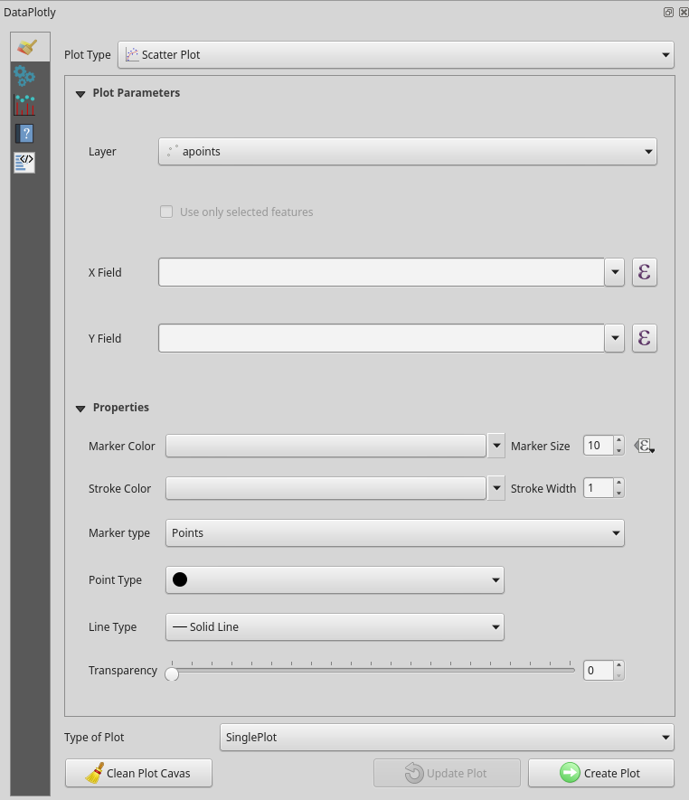
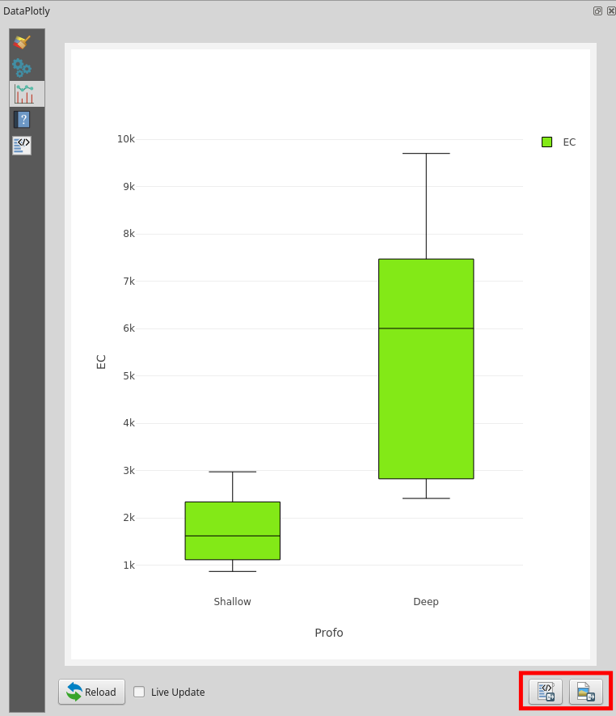

DataPlotly Standaard gebruik
De DataPlotly interface is ontworpen om simpel te zijn, maar tegelijk compleet met veel beschikbare opties en aanpassingen.
Het maken van een plot/diagram is zo gemakkelijk als het klinkt: kies het type diagram, x en y kolommen, kleuren, labels, etc. en klik op de Create Plot knop. Het diagram wordt onmiddellijk getoond in het diagramvenster.
Wanneer je een van de instellingen wilt veranderen, bijvoorbeeld de kleur of grootte van een marker, klik op de Update Plot knop: het diagram wordt dan geüpdate in het diagramvenster.


Voeg een diagram toe
De DataPlotly workflow is vrij eenvoudig:
kies het type diagram (1)
stel de laag en bijbehorende veld(en) in die je wilt tonen (2)
toon het diagram met de
Create Plotknop(3). Het diagramvenster is automatisch zichtbaar.

Je kunt de instellingen van het diagram aanpassen en op de Update knop klikken op het diagram te updaten.
Als je opnieuw wilt beginnen, klik dan op de Clean Plot Canvas knop. Het diagramvenster zal daarna leeg zijn.
Meervoudig diagram
DataPlotly maakt het mogelijk vele verschillende diagrammen te maken. Diagrammen kunnen worden getoond op hetzelfde diagramvenster (overlappend) of ieder diagram kan in aparte rijen of kolommen worden getoond (subdiagrammen).
Overlappende diagrammen
Je kunt zo veel diagrammen toevoegen aan het diagramvenster als je wilt. Diagramtypes kunnen verschillend zijn en ook de bron laag kan verschillen.
Notitie
resultaten kunnen erg vreemd zijn, afhankelijk van de gekozen velden en het diagramtype. Wees voorzichtig!
Om nog een diagram toe te voegen, herhaal de stappen uit Voeg een diagram toe door een ander diagramtype te kiezen en/of verschillende velden etc..
In de volgende afbeelding, hetzelfde diagramtype (spreidingsdiagram) en verschillende velden uit dezelfde laag:

De volgende afbeelding toont 2 verschillende overlappende diagramtypes (boxplot en spreidingsdiagram):

Subdiagrammen
Je kunt ervoor kiezen om de diagrammen te scheiden in aparte diagramvensters. Dit kan vooral nuttig zijn wanneer de schalen sterk afwijken of wanneer teveel overlappende data zorgt voor een onoverzichtelijk diagramvenster.
Je hoeft alleen maar het diagram en de velden te kiezen zoals beschreven in onderdeel Voeg een diagram toe, maar je moet de SubPlots parameter specificeren uit de keuzelijst én kiezen of de diagrammen in rijen(standaard parameter) of in kolommen worden getekend.
De volgende afbeeldingen tonen diagrammen in rijen en in kolommen:


Diagram opslaan
Een diagram opslaan, technisch gezien het diagramvenster, is erg simpel. Je kunt ervoor kiezen om het diagram als png afbeelding of als html bestand op te slaan.
Notitie
Saving the image as html file will keep the interactivity of the plot. The html file relies on the local DataPlotly installation, and cannot in general be used on other systems.
Klik op de juiste knop en kies de locatie waar het diagram moet worden opgeslagen, zowel statisch als interactief.


Ruwe diagramcode
Naast de mogelijkheid om het diagram op te slaan als afbeelding of html bestand (zie Diagram opslaan), kun je ook de ruwe html code kopiëren en elders embedden.
Een goede plek om de ruwe code te knippen en plakken is het html frame van de printvormgeving van QGIS.
Om de diagramcode te kopieren, ga naar het Raw Plot tabblad na het maken van het diagram: hier kun je een lange reeks. Klik rechts op het tabblad en kies Select All, klik opnieuw rechts en kies Copy (je kunt natuurlijk ook de sneltoetsen Ctrl + A voor Select All en Ctrl+C voor kopiëren`` gebruiken):

Nu is de broncode van het diagram gekopiëerd in het klembord: je hoeft nu alleen nog maar te kiezen waar je het wilt plakken
In het volgende voorbeeld wordt de html code geplakt in het html frame van de printomgeving:
open de printomgeving en voeg een
html frametoe (1)plak de code in het
Sourcegedeelte(2)ververs de
htmlcode (3)de resultaten worden getoond in het frame (4)

Tips voor velden
Het gebruik van expressies
DataPlotly ondersteunt alle veldtypen(integers,floats,text,etc..) en zal voortbouwen op de data zodat deze correct kan worden getoond.
Dankzij de QGIS API en custom widget is het mogelijk om Expressies toe te voegen in plaats van pure velden (bijv. field + 10, field1 * field2, etc).
Je kunt de expressies editor gebruiken om complexe expressies toe te voegen(bijv. (field1 + 10) * (field2 * 10)) of je kunt de expressie direct in de combo box typen. Expressies worden on the fly geëvalueerd, dus als de regel rood kleurt, is de expressie ongeldig.

Gebruik alleen geselecteerde objecten
Een andere handige optie is het alleen werken met geselecteerde objecten in een laag.
Vink de Use only selected features optie aan en alleen de attributen van geselecteerde objecten zullen worden gebruikt.